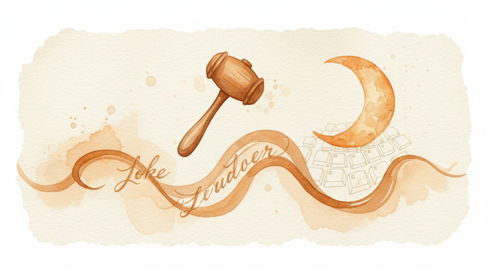

Hammerspoon is a macOS automation tool that uses Lua scripting. KeyPath ships a Hammerspoon Spoon that lets your scripts react to keyboard layer changes — show an overlay when you enter a window management layer, switch audio devices on a media layer, or anything else Hammerspoon can do.
If you have the KeyPath source checkout, symlink the Spoon:
ln -s /path/to/KeyPath/Integrations/KeyPath.spoon ~/.hammerspoon/Spoons/KeyPath.spoonOr copy it directly:
cp -r /path/to/KeyPath/Integrations/KeyPath.spoon ~/.hammerspoon/Spoons/Reload Hammerspoon after installing.
Add to your ~/.hammerspoon/init.lua:
hs.loadSpoon("KeyPath")
spoon.KeyPath:onLayerChange(function(layer, previous)
print("Layer: " .. layer .. " (was " .. previous .. ")")
end):start()Every time you switch layers in KeyPath, your callback fires.
spoon.KeyPath:onLayerChange(function(layer, previous)
if layer ~= "base" then
hs.notify.show("KeyPath", "", "Layer: " .. layer)
end
end)spoon.KeyPath:onLayerChange(function(layer)
if layer == "window" then
hs.grid.show()
end
end)spoon.KeyPath:onServiceState(function(state)
hs.notify.show("KeyPath", "", "Service " .. state)
end)The Spoon can also send actions to KeyPath:
-- Launch an app through KeyPath
spoon.KeyPath:sendAction("launch/Obsidian")
-- Trigger Mission Control
spoon.KeyPath:sendAction("system/mission-control")-- These update automatically as events arrive
print(spoon.KeyPath.currentLayer) -- "nav", "base", etc.
print(spoon.KeyPath.serviceState) -- "running" or "stopped"| Method | Description |
|---|---|
:onLayerChange(fn) |
Register callback fn(layer, previous) for layer changes |
:onServiceState(fn) |
Register callback fn(state) for service start/stop |
:start() |
Start listening for KeyPath events |
:stop() |
Stop listening |
:sendAction(uri) |
Send a keypath:// action URI to KeyPath |
.currentLayer |
Most recent layer name (nil until first event) |
.serviceState |
Most recent service state (nil until first event) |
All registration methods return self for chaining.
KeyPath broadcasts layer changes and service state via macOS Distributed Notifications. The Spoon subscribes using hs.distributednotifications. No network connections, no polling, no configuration — if KeyPath is running, events flow automatically.
You can also listen directly without the Spoon:
hs.distributednotifications.new(function(name, object, userInfo)
print("Layer: " .. userInfo.layer)
end, "com.keypath.layerChanged"):start()